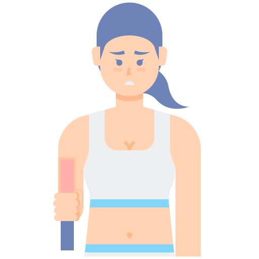
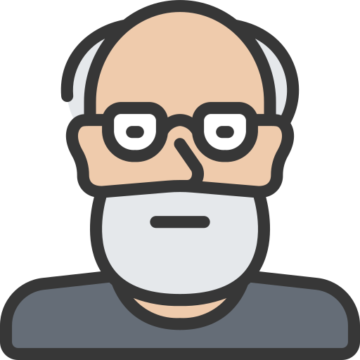
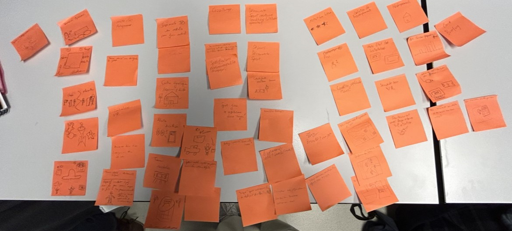
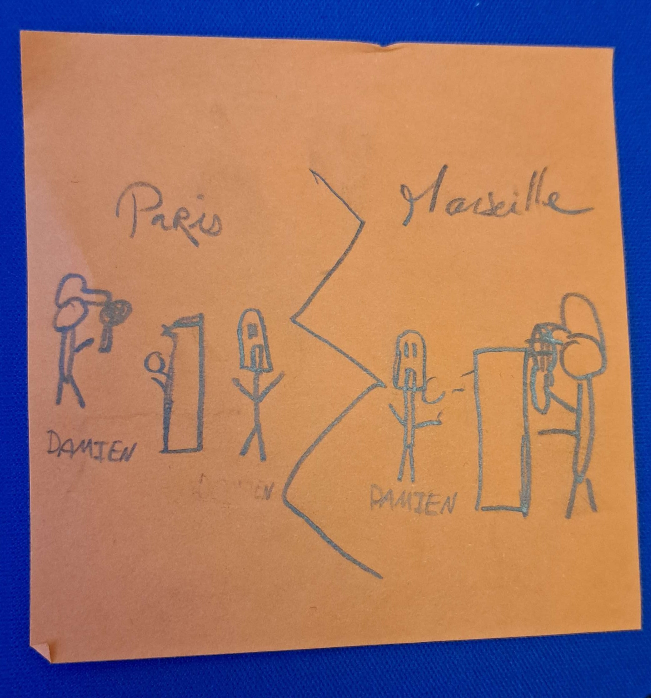
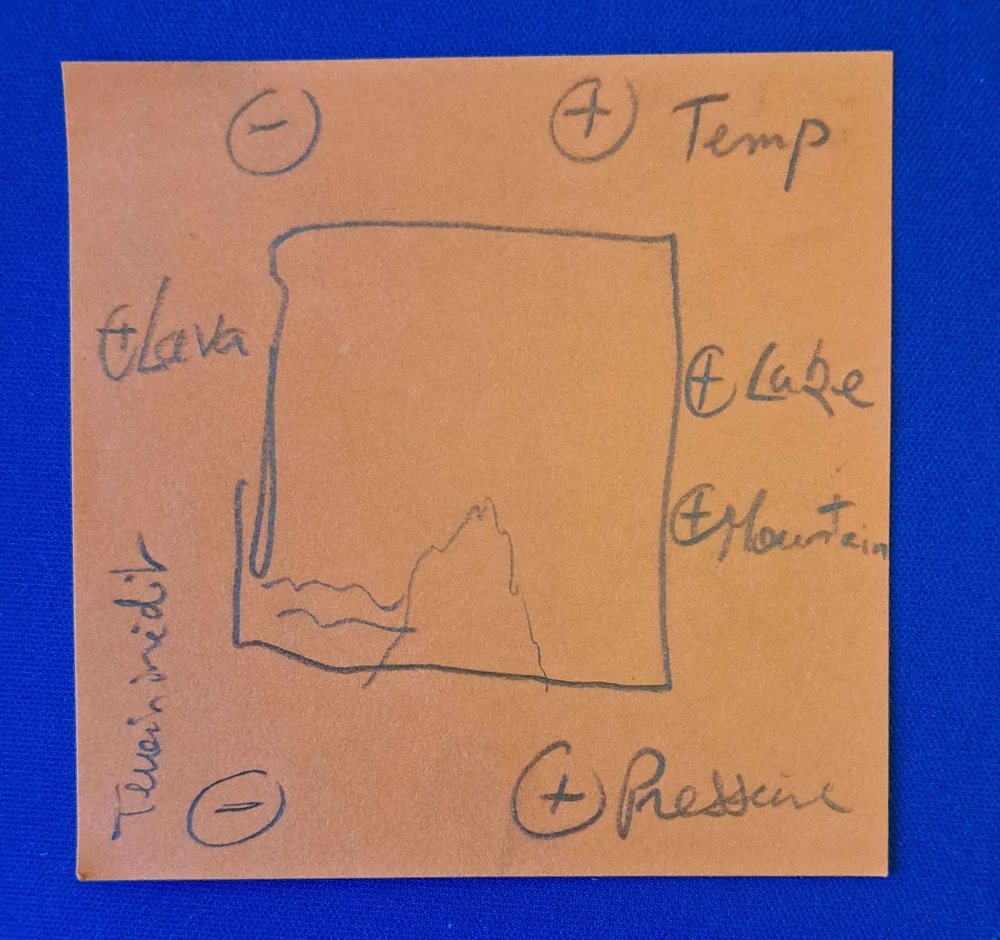
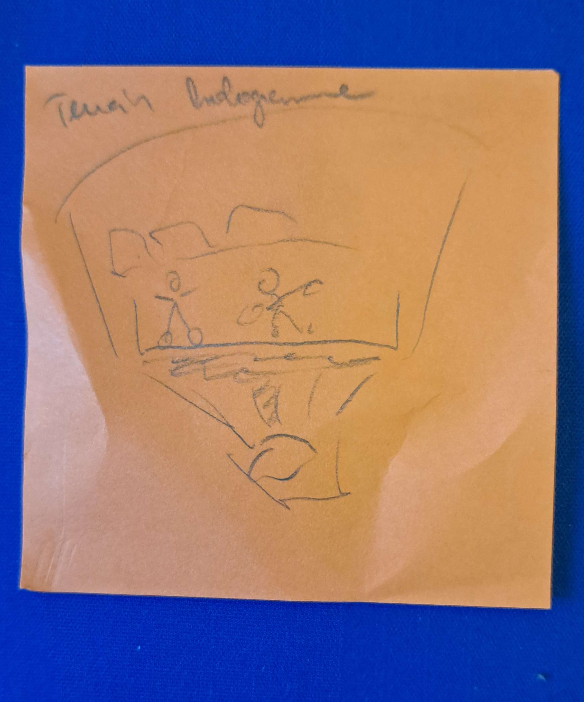

Présentation du Projet
Personas
D'après l'analyse des données, voici quelques Personas identifiés :

Mathéo
Démographie: Mathéo est un jeune homme de 20 ans, universitaire.
Intitulé du poste et principales responsabilités: Étudiant universitaire.
Objectifs et tâches par rapport à votre système/site: Mathéo souhaite commencer à pratiquer des activités sportives pour rester en forme et équilibrer son mode de vie étudiant.
Environnement: Mathéo vit probablement dans un environnement universitaire, entouré d'autres étudiants. Son environnement technologique comprendrait probablement l'utilisation de ressources en ligne pour la recherche et l'apprentissage.
Devis: "Faire mes premiers pas dans le monde du fitness tout en me sentant soutenu et guidé."
Démographie: Mathéo est un jeune homme de 20 ans, universitaire.
Intitulé du poste et principales responsabilités: Étudiant universitaire.
Objectifs et tâches par rapport à votre système/site: Mathéo souhaite commencer à pratiquer des activités sportives pour rester en forme et équilibrer son mode de vie étudiant.
Environnement: Mathéo vit probablement dans un environnement universitaire, entouré d'autres étudiants. Son environnement technologique comprendrait probablement l'utilisation de ressources en ligne pour la recherche et l'apprentissage.
Devis: "Faire mes premiers pas dans le monde du fitness tout en me sentant soutenu et guidé."

Hugo
Démographie: Hugo est un adolescent de 14 ans.
Intitulé du poste et principales responsabilités: Élève au collège ou au lycée.
Objectifs et tâches par rapport à votre système/site: Hugo est à la recherche de nouvelles activités sportives excitantes et stimulantes à pratiquer pendant ses temps libres.
Environnement: Hugo vit probablement avec sa famille et est entouré d'autres adolescents à l'école. Son environnement technologique serait également orienté vers les réseaux sociaux et les plateformes de divertissement en ligne.
Devis: "Explorer un monde d'activités sportives pour canaliser mon énergie et découvrir de nouveaux intérêts."
Démographie: Hugo est un adolescent de 14 ans.
Intitulé du poste et principales responsabilités: Élève au collège ou au lycée.
Objectifs et tâches par rapport à votre système/site: Hugo est à la recherche de nouvelles activités sportives excitantes et stimulantes à pratiquer pendant ses temps libres.
Environnement: Hugo vit probablement avec sa famille et est entouré d'autres adolescents à l'école. Son environnement technologique serait également orienté vers les réseaux sociaux et les plateformes de divertissement en ligne.
Devis: "Explorer un monde d'activités sportives pour canaliser mon énergie et découvrir de nouveaux intérêts."

Yvette
Démographie: Yvette est une femme de 42 ans, professionnelle du tennis.
Intitulé du poste et principales responsabilités: Joueuse de tennis professionnelle.
Objectifs et tâches par rapport à votre système/site: Yvette recherche des partenaires d'entraînement compétents pour maintenir et améliorer son niveau de jeu.
Environnement: Yvette évolue dans un environnement sportif, probablement dans un club de tennis ou un centre d'entraînement. Son environnement technologique comprendrait des outils de communication pour organiser des matchs et des séances d'entraînement.
Devis: "Trouver des partenaires de jeu compétitifs pour repousser mes limites et progresser dans ma carrière de tennis."
Démographie: Yvette est une femme de 42 ans, professionnelle du tennis.
Intitulé du poste et principales responsabilités: Joueuse de tennis professionnelle.
Objectifs et tâches par rapport à votre système/site: Yvette recherche des partenaires d'entraînement compétents pour maintenir et améliorer son niveau de jeu.
Environnement: Yvette évolue dans un environnement sportif, probablement dans un club de tennis ou un centre d'entraînement. Son environnement technologique comprendrait des outils de communication pour organiser des matchs et des séances d'entraînement.
Devis: "Trouver des partenaires de jeu compétitifs pour repousser mes limites et progresser dans ma carrière de tennis."

Gérard
Démographie: Gérard est un homme de 56 ans, amateur de sport.
Intitulé du poste et principales responsabilités: Profession non spécifiée, probablement travailleur à temps partiel ou retraité.
Objectifs et tâches par rapport à votre système/site: Gérard cherche à reprendre une activité sportive régulière pour améliorer sa santé et son bien-être général.
Environnement: Gérard vit probablement dans une communauté de banlieue ou de quartier, et peut être entouré d'autres personnes de son âge. Son environnement technologique serait probablement axé sur l'utilisation d'applications de fitness et de santé pour suivre ses progrès.
Devis: "Retrouver la vitalité de mes jours de jeunesse en
Démographie: Gérard est un homme de 56 ans, amateur de sport.
Intitulé du poste et principales responsabilités: Profession non spécifiée, probablement travailleur à temps partiel ou retraité.
Objectifs et tâches par rapport à votre système/site: Gérard cherche à reprendre une activité sportive régulière pour améliorer sa santé et son bien-être général.
Environnement: Gérard vit probablement dans une communauté de banlieue ou de quartier, et peut être entouré d'autres personnes de son âge. Son environnement technologique serait probablement axé sur l'utilisation d'applications de fitness et de santé pour suivre ses progrès.
Devis: "Retrouver la vitalité de mes jours de jeunesse en
Brainstorming
Sketchs
Sketchs de certaines idées étudiées. Dans l'ordre : le SportBot, la salle Neo-Sport et les matchs diffusés par hologramme


